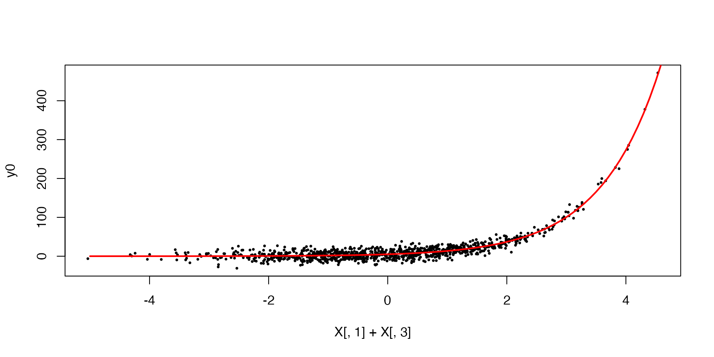
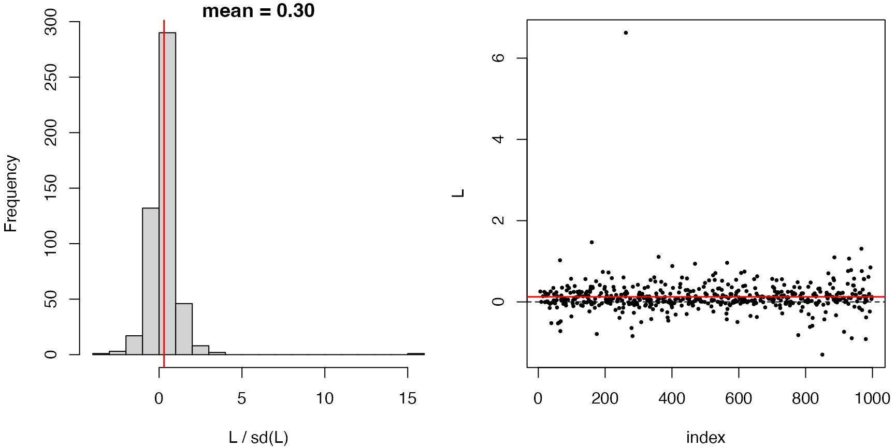
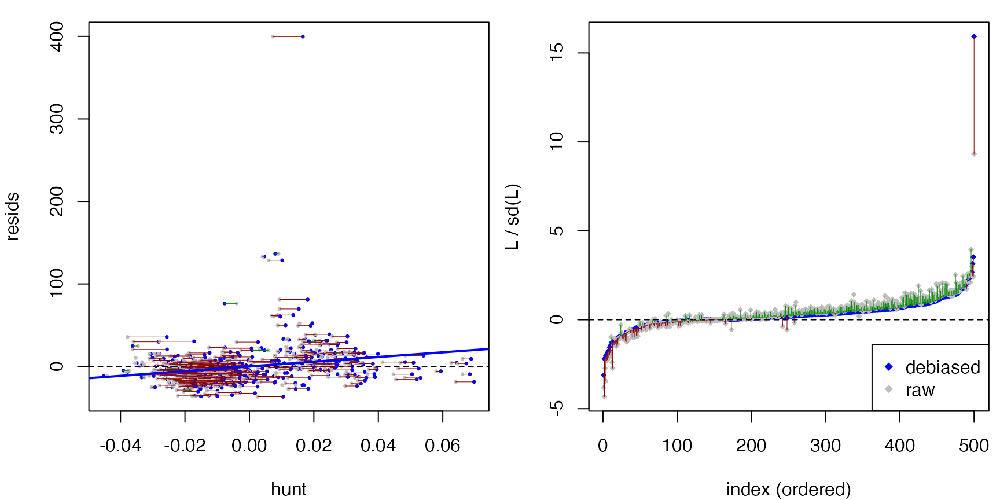

The package can be used to check and compare (generalized) linear
models with a non-canonical link function. Based on covariates
,
suppose the response is generated as
In other words, the regression model is specified as
To fit this generalized linear model, we must use the non-canonical
link family = gaussian(link = "log"). Here is a simple
simulation.
set.seed(42)
n <- 1000
X <- matrix(rnorm(n * 3), nrow = n)
X[,2] <- X[,2] + 0.2 * X[,1] - 0.3 * X[,3]
X[,3] <- X[,3] + 0.1 * X[,1]
f <- 5 * exp(X[,1] + X[,3])
y0 <- f + 10 * rnorm(n)
plot(X[,1] + X[,3], y0, pch=20, cex=0.5)
curve(5 * exp(x), -5, 5, add=TRUE, lwd=2, col="red")
For testing the model specification, we use:
# use a start value to help fitting
dat <- data.frame(y0=y0, X1=X[,1], X2=X[,2], X3=X[,3])
fit.0 <- glm(y0 ~ ., family = gaussian(link = "log"), data=dat, start=rep(1,4))
fit.0
#>
#> Call: glm(formula = y0 ~ ., family = gaussian(link = "log"), data = dat,
#> start = rep(1, 4))
#>
#> Coefficients:
#> (Intercept) X1 X2 X3
#> 1.587816 1.007276 0.003866 1.007188
#>
#> Degrees of Freedom: 999 Total (i.e. Null); 996 Residual
#> Null Deviance: 1183000
#> Residual Deviance: 97820 AIC: 7431
test.0 <- gof_test(fit.0)
test.0
#> Debiased score test:
#> y ~ X, with X consists of (Intercept), X1, X2, X3.
#> (hunt.style = optimal, hunt.method = grf)
#> n = 1000, two-way split: hunt = 500, debias & test = 500
#>
#> T = -1.8171, p-value = 0.965397Incorrect specification of the link can be detected by the goodness-of-fit test.
# identity link
fit.1 <- glm(y0 ~ ., family = gaussian(), data=dat, start=rep(1,4))
test.1 <- gof_test(fit.1)
test.1
#> Debiased score test:
#> y ~ X, with X consists of (Intercept), X1, X2, X3.
#> (hunt.style = optimal, hunt.method = grf)
#> n = 1000, two-way split: hunt = 500, debias & test = 500
#>
#> T = 6.6790, p-value = 1.20309e-11
plot(test.1)

We can further use compare_models to assess the
significance of predictors:
# significance of X2
fit.drop2 <- glm(y0 ~ X1 + X3, family = gaussian(link = "log"),
data=dat, start=rep(1,3))
compare_models(fit.drop2, fit.0)
#> Debiased score test:
#> y ~ X, with X consists of (Intercept), X1, X2, X3.
#> (hunt.style = optimal, hunt.method = glm)
#> n = 1000, two-way split: hunt = 500, debias & test = 500
#>
#> T = -0.3890, p-value = 0.651351
# compare with anova
anova(fit.0, fit.drop2)
#> Analysis of Deviance Table
#>
#> Model 1: y0 ~ X1 + X2 + X3
#> Model 2: y0 ~ X1 + X3
#> Resid. Df Resid. Dev Df Deviance F Pr(>F)
#> 1 996 97818
#> 2 997 97829 -1 -11.764 0.1198 0.7293
# significance of (X2, X3) together
fit.drop23 <- glm(y0 ~ X1, family = gaussian(link = "log"),
data=dat, start=rep(1,2))
compare_models(fit.drop23, fit.0)
#> Debiased score test:
#> y ~ X, with X consists of (Intercept), X1, X2, X3.
#> (hunt.style = optimal, hunt.method = glm)
#> n = 1000, two-way split: hunt = 500, debias & test = 500
#>
#> T = 3.3959, p-value = 0.000341982
# compare with anova
anova(fit.0, fit.drop23)
#> Analysis of Deviance Table
#>
#> Model 1: y0 ~ X1 + X2 + X3
#> Model 2: y0 ~ X1
#> Resid. Df Resid. Dev Df Deviance F Pr(>F)
#> 1 996 97818
#> 2 998 876971 -2 -779153 3966.7 < 2.2e-16 ***
#> ---
#> Signif. codes: 0 '***' 0.001 '**' 0.01 '*' 0.05 '.' 0.1 ' ' 1